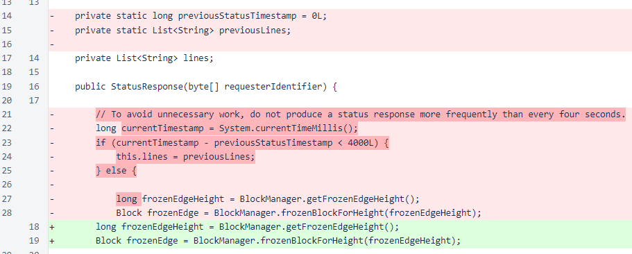

Nyzo version 485 (commit on GitHub) corrects an issue related to caching of status responses.
This version does not significantly alter behavior of the verifier or the sentinel. It only corrects a small issue with the status response of the verifier.
In version 481, the status response was changed to add some information only for self-signed requests. However, the StatusResponse class used a caching mechanism that would store and reuse a previously generated response. If someone else were to send a status request immediately after a self-signed request, the other requester could improperly receive the more detailed response intended only for self-signed requests.
This is not an urgent update, as the additional information disclosed was mostly previously available publicly and is not especially sensitive. If you are especially concerned about disclosure of the information reserved for self-signed requests, simply avoid making self-signed requests until you have updated to this version or later.
Caching of status responses was an unnecessary optimization, so the fix for this problem was removal of the caching. The commit looks more substantial than it is due to git's handling of indentation changes. Two static variables were removed and an if/else condition was eliminated. No other changes were made.
